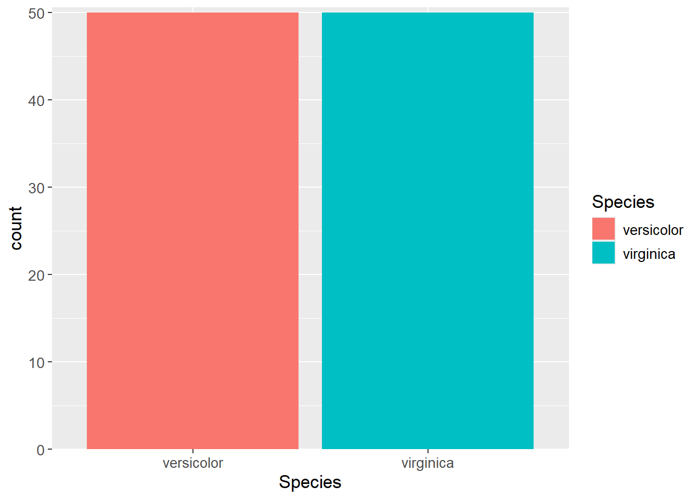

Show the code
set.seed(1337)
library("tidymodels")
tidymodels::tidymodels_prefer()Set seed and load packages.
set.seed(1337)
library("tidymodels")
tidymodels::tidymodels_prefer()Load data.
data("iris")
iris <- iris |>
tibble::as_tibble() |>
filter(Species != "setosa") |>
droplevels()For simplicity, the iris dataset is used since the structure is simple, and readers should be familiar with it. As a quick reminder, the dataset consists of five variables (columns) and 150 observations (rows). The first four variables are doubles describing the size of the flower, used as features. The last variable, the response, is a factor indicating the species of flower, used as the response. To make this a binary logistic classification problem, and not multiclass, the setosa species have been excluded.
dim(iris)[1] 100 5iris |>
slice_head(n = 5) |>
str()tibble [5 × 5] (S3: tbl_df/tbl/data.frame)
$ Sepal.Length: num [1:5] 7 6.4 6.9 5.5 6.5
$ Sepal.Width : num [1:5] 3.2 3.2 3.1 2.3 2.8
$ Petal.Length: num [1:5] 4.7 4.5 4.9 4 4.6
$ Petal.Width : num [1:5] 1.4 1.5 1.5 1.3 1.5
$ Species : Factor w/ 2 levels "versicolor","virginica": 1 1 1 1 1As is customary when modeling, the dataset is split into a training- and testing set. It is needed to check for class imbalance in case some responses (here species) are more likely in the dataset. As seen from the plot below, it is not the case.
iris |>
ggplot(aes(x = Species,
fill = Species)) +
geom_bar()
If a class imbalance was observed, using the strata argument should be used as in the below to ensure that the training- and testing set have the same distribution of the response variable. The prop argument indicates that 90% of the data is used for training and 10% for testing.
iris_split <- initial_split(iris,
prop = 0.90,
strata = Species)
iris_train <- training(iris_split)
iris_test <- testing(iris_split)As it is not the case, just using the prop argument is sufficient.
iris_split <- initial_split(iris,
prop = 0.90)
iris_train <- training(iris_split)
iris_test <- testing(iris_split)The parsnip package standardizes creating models. When learning a new technique, here parsnip, it is a good idea to apply well known theory. Therefore, a linear logistic regression model is used to predict the species of a flower given the dimensions of the sepal and the petal. If the reader is unfamiliar with the theory, it is recommended to read the chapter on logistic regression (Chapter 8).
lg_model <- logistic_reg()Different packages contain different ways of applying a linear logistic regression model. The issues are more apparent for more advances models, where e.g. the arguments have different names or should be supplied in a different way. The parsnip package standardizes this. It is important to choose which engine to use - i.e. which package. The show_engines() function can be used to see which packages are available for the model. Here, the glm package is used.
# Show available packages for the model
show_engines("logistic_reg")# A tibble: 7 × 2
engine mode
<chr> <chr>
1 glm classification
2 glmnet classification
3 LiblineaR classification
4 spark classification
5 keras classification
6 stan classification
7 brulee classificationlg_model <- lg_model |>
set_engine("glm")Using the formula syntax, it is specified which variables are the features and the response. The tidy() function can be used to get a summary of the model in a tibble format.
lg_fit <- lg_model |>
fit(Species ~ Sepal.Length + Sepal.Width + Petal.Length + Petal.Width,
data = iris_train)
lg_fit |> tidy()# A tibble: 5 × 5
term estimate std.error statistic p.value
<chr> <dbl> <dbl> <dbl> <dbl>
1 (Intercept) -41.6 24.6 -1.69 0.0912
2 Sepal.Length -2.35 2.33 -1.01 0.314
3 Sepal.Width -6.94 4.49 -1.54 0.123
4 Petal.Length 9.55 4.86 1.97 0.0493
5 Petal.Width 17.2 9.31 1.84 0.0653Making predictions is also standardized and requires the function predict(). The model seem to predict correctly in all cases.
iris_test |>
select(Species) |>
bind_cols(predict(lg_fit,
new_data = iris_test))# A tibble: 10 × 2
Species .pred_class
<fct> <fct>
1 versicolor versicolor
2 versicolor versicolor
3 versicolor versicolor
4 versicolor versicolor
5 versicolor versicolor
6 versicolor versicolor
7 virginica virginica
8 virginica virginica
9 virginica virginica
10 virginica virginica sessioninfo::session_info()─ Session info ───────────────────────────────────────────────────────────────
setting value
version R version 4.3.3 (2024-02-29 ucrt)
os Windows 11 x64 (build 22631)
system x86_64, mingw32
ui RTerm
language (EN)
collate English_United Kingdom.utf8
ctype English_United Kingdom.utf8
tz Europe/Copenhagen
date 2024-05-29
pandoc 3.1.11 @ C:/Program Files/RStudio/resources/app/bin/quarto/bin/tools/ (via rmarkdown)
─ Packages ───────────────────────────────────────────────────────────────────
package * version date (UTC) lib source
backports 1.4.1 2021-12-13 [1] CRAN (R 4.3.1)
broom * 1.0.5 2023-06-09 [1] CRAN (R 4.3.3)
cachem 1.0.8 2023-05-01 [1] CRAN (R 4.3.3)
class 7.3-22 2023-05-03 [2] CRAN (R 4.3.3)
cli 3.6.2 2023-12-11 [1] CRAN (R 4.3.3)
codetools 0.2-19 2023-02-01 [2] CRAN (R 4.3.3)
colorspace 2.1-0 2023-01-23 [1] CRAN (R 4.3.3)
conflicted 1.2.0 2023-02-01 [1] CRAN (R 4.3.3)
data.table 1.15.4 2024-03-30 [1] CRAN (R 4.3.3)
dials * 1.2.1 2024-02-22 [1] CRAN (R 4.3.3)
DiceDesign 1.10 2023-12-07 [1] CRAN (R 4.3.3)
digest 0.6.35 2024-03-11 [1] CRAN (R 4.3.3)
dplyr * 1.1.4 2023-11-17 [1] CRAN (R 4.3.2)
evaluate 0.23 2023-11-01 [1] CRAN (R 4.3.3)
fansi 1.0.6 2023-12-08 [1] CRAN (R 4.3.3)
farver 2.1.1 2022-07-06 [1] CRAN (R 4.3.3)
fastmap 1.1.1 2023-02-24 [1] CRAN (R 4.3.3)
foreach 1.5.2 2022-02-02 [1] CRAN (R 4.3.3)
furrr 0.3.1 2022-08-15 [1] CRAN (R 4.3.3)
future 1.33.2 2024-03-26 [1] CRAN (R 4.3.3)
future.apply 1.11.2 2024-03-28 [1] CRAN (R 4.3.3)
generics 0.1.3 2022-07-05 [1] CRAN (R 4.3.3)
ggplot2 * 3.5.1 2024-04-23 [1] CRAN (R 4.3.3)
globals 0.16.3 2024-03-08 [1] CRAN (R 4.3.3)
glue 1.7.0 2024-01-09 [1] CRAN (R 4.3.3)
gower 1.0.1 2022-12-22 [1] CRAN (R 4.3.1)
GPfit 1.0-8 2019-02-08 [1] CRAN (R 4.3.3)
gtable 0.3.5 2024-04-22 [1] CRAN (R 4.3.3)
hardhat 1.3.1 2024-02-02 [1] CRAN (R 4.3.3)
htmltools 0.5.8.1 2024-04-04 [1] CRAN (R 4.3.3)
htmlwidgets 1.6.4 2023-12-06 [1] CRAN (R 4.3.3)
infer * 1.0.7 2024-03-25 [1] CRAN (R 4.3.3)
ipred 0.9-14 2023-03-09 [1] CRAN (R 4.3.3)
iterators 1.0.14 2022-02-05 [1] CRAN (R 4.3.3)
jsonlite 1.8.8 2023-12-04 [1] CRAN (R 4.3.3)
knitr 1.46 2024-04-06 [1] CRAN (R 4.3.3)
labeling 0.4.3 2023-08-29 [1] CRAN (R 4.3.1)
lattice 0.22-5 2023-10-24 [2] CRAN (R 4.3.3)
lava 1.8.0 2024-03-05 [1] CRAN (R 4.3.3)
lhs 1.1.6 2022-12-17 [1] CRAN (R 4.3.3)
lifecycle 1.0.4 2023-11-07 [1] CRAN (R 4.3.3)
listenv 0.9.1 2024-01-29 [1] CRAN (R 4.3.3)
lubridate 1.9.3 2023-09-27 [1] CRAN (R 4.3.3)
magrittr 2.0.3 2022-03-30 [1] CRAN (R 4.3.3)
MASS 7.3-60.0.1 2024-01-13 [2] CRAN (R 4.3.3)
Matrix 1.6-5 2024-01-11 [2] CRAN (R 4.3.3)
memoise 2.0.1 2021-11-26 [1] CRAN (R 4.3.3)
modeldata * 1.3.0 2024-01-21 [1] CRAN (R 4.3.3)
munsell 0.5.1 2024-04-01 [1] CRAN (R 4.3.3)
nnet 7.3-19 2023-05-03 [2] CRAN (R 4.3.3)
parallelly 1.37.1 2024-02-29 [1] CRAN (R 4.3.3)
parsnip * 1.2.1 2024-03-22 [1] CRAN (R 4.3.3)
pillar 1.9.0 2023-03-22 [1] CRAN (R 4.3.3)
pkgconfig 2.0.3 2019-09-22 [1] CRAN (R 4.3.3)
prodlim 2023.08.28 2023-08-28 [1] CRAN (R 4.3.3)
purrr * 1.0.2 2023-08-10 [1] CRAN (R 4.3.3)
R6 2.5.1 2021-08-19 [1] CRAN (R 4.3.3)
Rcpp 1.0.12 2024-01-09 [1] CRAN (R 4.3.3)
recipes * 1.0.10 2024-02-18 [1] CRAN (R 4.3.3)
rlang 1.1.3 2024-01-10 [1] CRAN (R 4.3.3)
rmarkdown 2.26 2024-03-05 [1] CRAN (R 4.3.3)
rpart 4.1.23 2023-12-05 [2] CRAN (R 4.3.3)
rsample * 1.2.1 2024-03-25 [1] CRAN (R 4.3.3)
rstudioapi 0.16.0 2024-03-24 [1] CRAN (R 4.3.3)
scales * 1.3.0 2023-11-28 [1] CRAN (R 4.3.3)
sessioninfo 1.2.2 2021-12-06 [1] CRAN (R 4.3.3)
survival 3.5-8 2024-02-14 [2] CRAN (R 4.3.3)
tibble * 3.2.1 2023-03-20 [1] CRAN (R 4.3.3)
tidymodels * 1.2.0 2024-03-25 [1] CRAN (R 4.3.3)
tidyr * 1.3.1 2024-01-24 [1] CRAN (R 4.3.3)
tidyselect 1.2.1 2024-03-11 [1] CRAN (R 4.3.3)
timechange 0.3.0 2024-01-18 [1] CRAN (R 4.3.3)
timeDate 4032.109 2023-12-14 [1] CRAN (R 4.3.2)
tune * 1.2.1 2024-04-18 [1] CRAN (R 4.3.3)
utf8 1.2.4 2023-10-22 [1] CRAN (R 4.3.3)
vctrs 0.6.5 2023-12-01 [1] CRAN (R 4.3.3)
withr 3.0.0 2024-01-16 [1] CRAN (R 4.3.3)
workflows * 1.1.4 2024-02-19 [1] CRAN (R 4.3.3)
workflowsets * 1.1.0 2024-03-21 [1] CRAN (R 4.3.3)
xfun 0.43 2024-03-25 [1] CRAN (R 4.3.3)
yaml 2.3.8 2023-12-11 [1] CRAN (R 4.3.2)
yardstick * 1.3.1 2024-03-21 [1] CRAN (R 4.3.3)
[1] C:/Users/Willi/AppData/Local/R/win-library/4.3
[2] C:/Program Files/R/R-4.3.3/library
──────────────────────────────────────────────────────────────────────────────